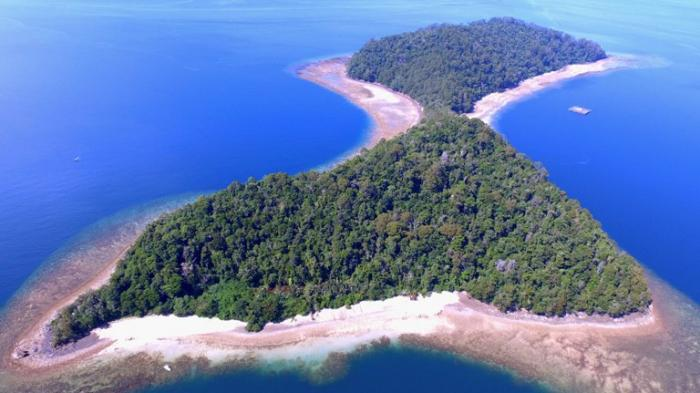
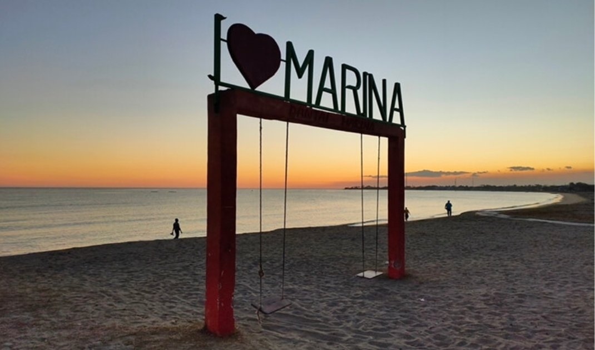

Destinasi Unggulan

Taman Laut Taka Bonerate
Surga bawah laut dengan keindahan terumbu karang dan biota laut yang luar biasa, cocok untuk snorkeling dan diving

Pantai Losari
Icon Kota Makassar dengan pemandangan sunset yang indah dan berbagai kegiatan seperti memancing, banana boat, dan sepeda air.

Pulau Samalona
Pulau kecil di depan Kota Makassar yang menawarkan spot snorkeling dan diving yang mudah diakses dengan terumbu karang yang indah.

Pulau Bulupoloe
Pulau dengan keindahan alam pegunungan dan laut yang masih alami.

Pantai Baloiya
Pantai eksotis di Kabupaten Selayar dengan keindahan alam laut yang luar biasa.

Pantai Marina
Pantai dengan desain dan suasana unik, memiliki fasilitas lengkap dan standar dunia.